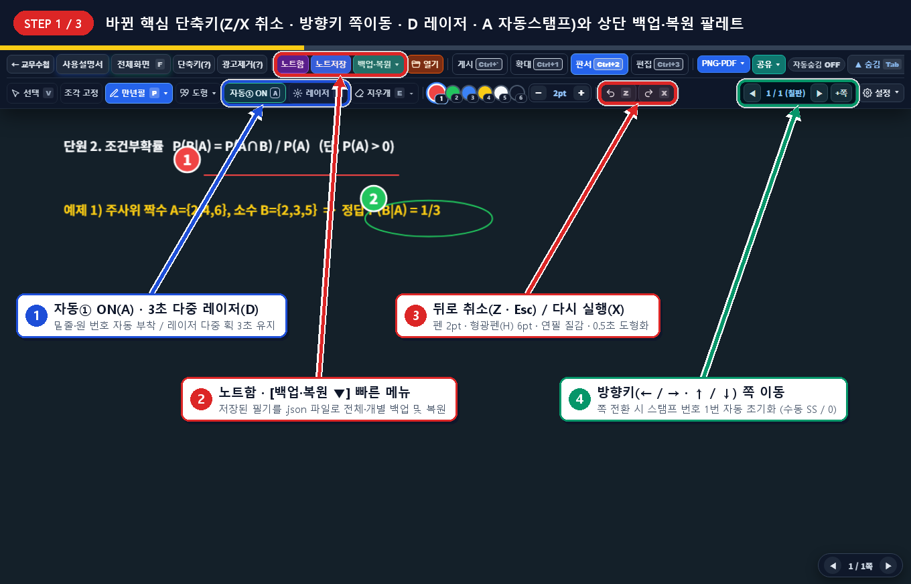

화면 1 / 3
상단 팔레트 & 최신 단축키 배치 — 취소(Z/Esc)·다시실행(X), 쪽이동(←/→), 3초 다중 레이저(D), 펜 2pt·형광펜 6pt

- 뒤로 취소(Z · Esc · ,) / 앞으로 다시 실행(X · .)으로 왼손·오른손 어디서나 빠르게 판서를 되돌리고, 방향키(← → · ↑ ↓)로 슬라이드와 PDF 페이지를 넘깁니다.
- 일반 펜(만년필·볼펜·삼성노트 질감 연필·붓펜)은 기본 2pt, 형광펜(H)은 기본 6pt로 시작하며, 펜과 형광펜 모두 그리다가 끝에서 0.5초 멈추면 반듯한 직선·도형으로 변환됩니다. 레이저(D)는 여러 획을 연속 필기해도 선이 이어지지 않고 각각 3초간 유지됩니다.